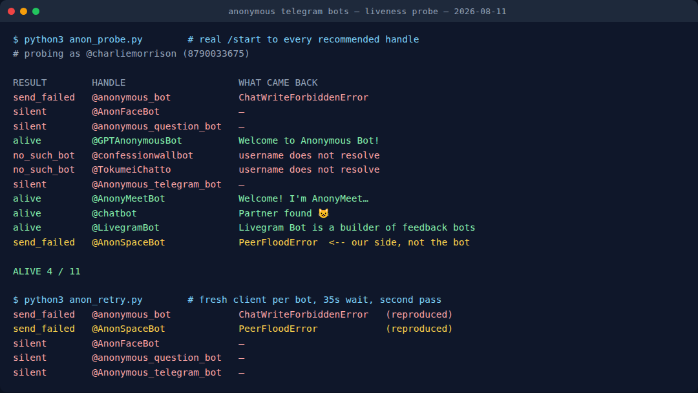

Anonymous Telegram Bots: I Tested 11, Only 4 Work
Every article about anonymous messaging on Telegram — including the first version of this one — recommends bots by handle and moves on. None of them press Start. So on 11 August 2026 I took the eleven handles that the pages currently ranking for this query recommend, sent each one a real /start from my own account, and waited.
Four replied. Three stayed silent through two attempts. Two handles do not exist at all. One refuses to accept messages. And exactly one of the eleven does the thing people are actually searching for — a link you share, which collects anonymous messages back to you.
The uncomfortable part: all three bots this page used to recommend are in the failing group. That is why the page has been rewritten around the test rather than quietly patched.
The test, in full
The candidate list is a union, not a hand-picked shortlist: the three handles this article recommended before today, plus every distinct handle recommended by the other pages and bot directories that surface for “anonymous message bot telegram” and “NGL alternative telegram”. Eleven distinct handles, none dropped for looking unpromising.
Each got one /start from a normal user account over MTProto, then a 20-second wait, then a read of the chat for any message newer than the one I sent. Anything that failed or stayed quiet was run again in a second pass with a fresh client and a 35-second wait, because a single flaky run is not evidence. Every message I sent was deleted afterwards.

Results
| Handle | Result | What came back |
|---|---|---|
| @GPTAnonymousBot | ✅ replied | “Welcome to Anonymous Bot!” — send and receive anonymous messages |
| @AnonyMeetBot | ✅ replied | Anonymous chat with strangers; asks your gender first |
| @chatbot | ✅ replied | “Partner found” — paired with a stranger immediately |
| @LivegramBot | ✅ replied | A builder for feedback bots, not an inbox itself |
| @AnonFaceBot | ❌ silent | No reply in either pass |
| @anonymous_question_bot | ❌ silent | No reply in either pass |
| @Anonymous_telegram_bot | ❌ silent | No reply in either pass |
| @anonymous_bot | ❌ won't accept | ChatWriteForbiddenError — the message cannot even be delivered |
| @confessionwallbot | ❌ gone | Username does not resolve |
| @TokumeiChatto | ❌ gone | Username does not resolve |
| @AnonSpaceBot | ⚠️ inconclusive | PeerFloodError — my account was rate-limited, so this is a result about me |
Why the amber row matters more than it looks. PeerFloodError is Telegram throttling my account for messaging too many new bots in a row — it says nothing about @AnonSpaceBot. Scoring it as “dead” would have made a better headline (4 of 11 works nicely) and been false. It reproduced identically on the second pass, which is the tell: a failure that repeats at exactly the same point regardless of the target is usually yours, not the world's. So of the ten handles I can speak about, four work.
The three this page used to recommend all failed
Written into the old version of this article, with confident one-line reviews, were @anonymous_bot, @AnonFaceBot and @anonymous_question_bot. Today: one cannot receive messages at all, and two answer nothing.
❌ @anonymous_bot — “simple, no-frills anonymous messaging”
Sending returns ChatWriteForbiddenError, on two separate attempts with a fresh client each time. That error means Telegram will not deliver a message into that chat at all — there is nothing left to press Start on.
❌ @AnonFaceBot — “anonymous group confessions”
Accepts the message, never answers — 20 seconds on the first pass, 35 on the second. A bot that does not reply to /start cannot issue you a link, which is the entire feature.
❌ @anonymous_question_bot — “Q&A sessions and AMAs”
Same: message delivered, silence both times.
I am not going to pretend those reviews came from anywhere but the same recycled lists everyone else copies. That is exactly the failure mode this test exists to catch, and it caught this page too.
Only one of them does the NGL job
Reading what the four survivors actually say when they answer turns out to matter as much as whether they answer. They are three different products wearing the same keyword:
✅ @GPTAnonymousBot — the NGL-style inbox
Best for: a link you share, messages that come back to you
Its own welcome text: “Now you can send and receive anonymous messages through this Bot to other users, groups or channels.” This is the only one of the eleven that matches what people mean when they search for an NGL replacement. If you want one recommendation from this article, it is this one.
✅ @AnonyMeetBot and @chatbot — stranger chat, not an inbox
Best for: talking to a random person, not collecting messages from friends
@chatbot paired me with a stranger within seconds of /start. @AnonyMeetBot asks for your gender before matching. Both work, and neither gives you a shareable link — they are the Omegle idea inside Telegram. Useful, but a different product from the one the search term implies.
✅ @LivegramBot — a builder, not a bot you use
Best for: creating your own feedback bot
“Livegram Bot is a builder of feedback bots for Telegram.” You end up operating your own bot rather than using someone else's. That is genuinely the most private option here — there is no third-party operator reading both sides — but it is a ten-minute setup, not a link you paste into a bio.
So the honest count for the thing most people want is one out of eleven. Every list that presents these as interchangeable options is wrong in a way that pressing Start reveals in twenty seconds.
The 20-second check you can run yourself
You do not need a script for this. Before trusting any bot recommendation, anywhere:
- Open the handle. If Telegram says the username does not exist, the article recommending it has not been checked in years — two of eleven failed here.
- Press Start. Count to twenty. A live bot answers instantly; none of the four working ones took more than a second or two.
- Read what it says it does, not what the article said it does. That is how “anonymous messaging” turned out to be three different products above.
- Then share your link — never before, or you will hand your followers a link into a dead chat.
Want group fun that definitely answers?
Our own party game Mini App runs inside Telegram — Truth or Dare, Never Have I Ever, Would You Rather. No install, no link to a dead bot.
Open the free Mini App Not on Telegram right now? Play in your browser →Why anonymous messaging moved to Telegram at all
The reason this niche exists in the first place is the collapse of the standalone apps. In July 2024 the FTC and the Los Angeles District Attorney settled with NGL Labs for $5 million — $4.5 million in consumer redress and a $500,000 civil penalty — over fake messages that appeared to come from real people and a recurring charge of up to $9.99 a week that many users thought was a one-off. Sarahah and Tellonym had their own versions of the same story.
Telegram inherited the use case for structural reasons rather than marketing ones:
- No extra install — the recipient already has the app, so a bot link works from any bio.
- Bots are a first-class platform, not a hack. Anyone can build one; the Bot API is public and documented, which is also why so many abandoned ones are still listed.
- Mini Apps give a real interface — buttons, haptics — inside the chat.
- Cross-platform — iOS, Android, desktop and web, with no “iPhone only” features.
The same openness that makes it easy to ship a bot makes it easy to abandon one. Nothing on Telegram's side removes a dead bot from a listicle.
What “anonymous” actually means here
Worth being precise, because the word is doing a lot of work in every article on this topic. With a third-party bot, you are anonymous to the recipient. You are not anonymous to the bot's operator, who sits in the middle and can read both sides. That is not a Telegram flaw — it is what a bot is — but it is the difference between “my classmate cannot tell it was me” and “nobody can tell it was me”.
- Share your link with people you chose, not with the open internet.
- Nothing here is end-to-end encrypted. Bot chats are cloud chats by design; a bot cannot participate in a secret chat.
- Harassment is reportable. You can stop sharing the link at any time, and Telegram acts on reports.
- Anonymous is not untraceable. Serious abuse can still be pursued by law enforcement.
How to set it up, once you have a bot that answers
- Press Start on a bot that replied for you — today that means @GPTAnonymousBot for the link-and-inbox use case.
- Get your link from the bot's reply.
- Test it yourself first from another device or ask one friend, before it goes in a bio.
- Share it in your Instagram story, TikTok bio or X profile.
- Re-check it monthly. Bots die quietly; the link keeps looking fine.
Frequently Asked Questions
Which anonymous Telegram bots actually work in 2026?
On 11 August 2026, four of eleven recommended handles replied to a real /start: @GPTAnonymousBot, @AnonyMeetBot, @chatbot and @LivegramBot. Only @GPTAnonymousBot does the NGL-style link-and-inbox job; the other two working ones are stranger chat and a bot builder.
Are Telegram anonymous messages really anonymous?
Anonymous to the recipient, yes — the bot does not reveal who wrote the message. Not anonymous to the bot's operator, who can see both sides. Bot chats are also not end-to-end encrypted.
Why do so many recommended bots not answer?
Because nobody publishing these lists presses Start. Handles get copied between articles for years, so a bot abandoned in 2023 is still being recommended in 2026 — and two of the eleven here no longer exist as usernames at all.
What happened to NGL?
A $5 million settlement with the FTC and the Los Angeles DA in July 2024 — $4.5 million in consumer redress plus a $500,000 civil penalty — over fake “anonymous” messages and an undisclosed recurring charge of up to $9.99 a week.
Can I use anonymous messaging without a Telegram account?
Some bots expose a web form so the sender does not need Telegram. The recipient always does, because the messages are delivered into a Telegram chat.
Related tests on this blog
This is the second time the same method has produced the same finding on Telegram bot recommendations:
- I messaged 18 “best” Telegram game bots — 7 never replied, the run that started this.
- Best Telegram party games and bots in 2026 — only handles that answered.
- How to run a Telegram game night, including the poll limits that break one.
- Your dead Telegram bot still has a mailbox — the other side of a bot that stops answering: mine had 22 updates waiting, and four people had pressed Start.
- All our Telegram bots and Mini Apps.
Telegram Party Pack — 255 group-chat prompts
Truth or Dare, Never Have I Ever, Would You Rather, Most Likely To, Paranoia and Story Chain, written out so your game night does not depend on a bot being alive.
Get the packAnonymous to your friend is not the same as anonymous to the bot. I read the raw /start payload my own bot receives: six identity fields, including your @username.